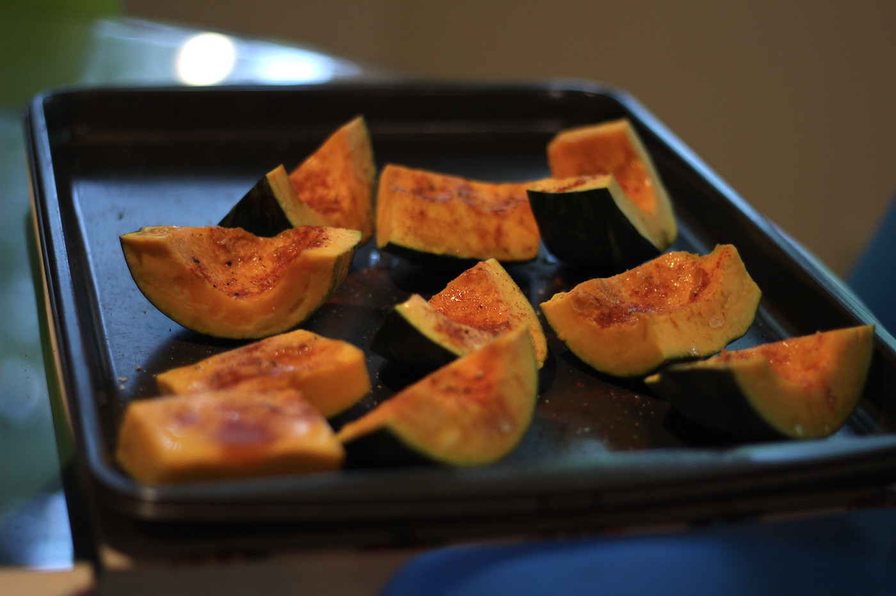
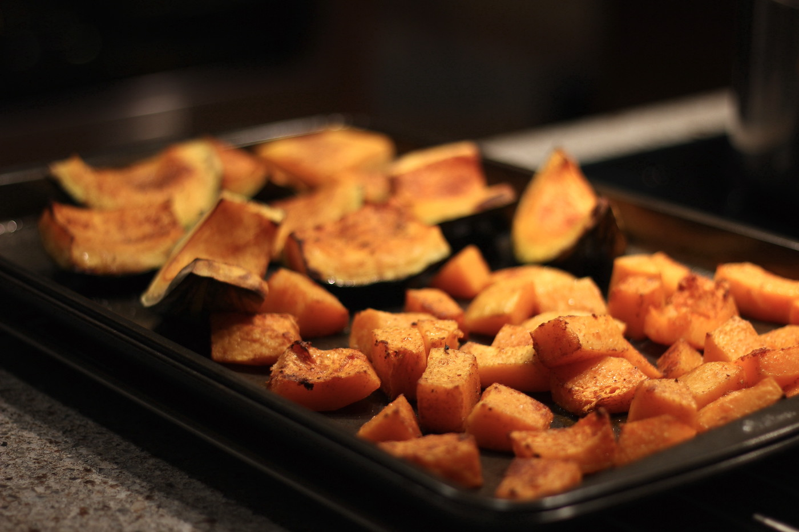

Description
This is one of my favourite soups to make. It is delicious paired with focaccia bread or kale salad.
Ingredients
- 1 Kabocha Squash1
- 1 Butternut Squash
- 4-6 cups Water + 2 tsp Veggie Bouillon or 4-6 cups Veggie Stock2
- 1 Carrot
- 1 Onion
- 1 Celery Stick
- 2 Cloves of Garlic
- Olive Oil
- Salt
- Pepper
- Paprika
- Oat Milk (or other plant milk)
- Fresh Parsley
Instructions
- Preheat oven to 425 degrees Fahrenheit.
- Cut Kabocha Squash into pieces, hollow out inner seeds / gunk with a spoon, place on sheet pan, cover pieces with Olive Oil, paprika, salt, and pepper. 
- Bake Kabocha Squash until soft enough to easily insert a fork or spoon.
- While Kabocha Squash is baking peel and cut Butternut Squash. Toss in Olive Oil, paprika, salt, and pepper. Remove Kabocha from oven and add Butternut Squash to sheet pan. Bake until soft.
- While Squash is baking, dice up Carrot, Onion, Celery, and Garlic. Heat up Olive Oil (at least 2 tbsp) in a deep pot. Add diced ingredients and season with salt, pepper, and paprika. This will be our mirepoix.
- Once ingredients start to stick, add water and Bouillon, (or veggie stock) to pot. Cover pot with a lid and let cook (min 45 minutes).
- Once Squash is adequately cooked, remove from oven.
- Add Butternut Squash to soup.
- Once Kabocha Squash is cool enough to touch, peel off skin and add insides to soup.
- Once all ingredients are soft, use a blender (or hand blender) to purée soup. If soup is too thick add plant milk or water to achieve desired texture.
- Let cook a couple more minutes and add Salt, Pepper and Paprika to taste. This is also a good time to dice up some Parsley for our garnish.
- Garnish with fresh chopped Parsley and olive oil (optional).
-
I like to make my soup with a Kabocha and a Butternut Squash. You could also make this recipe with just one type of Squash (or experiment with other varieties). ↩
-
Base the amount of water on the quanty of Squash you are using. If you are unsure, start with 4 cups (you can always thin the soup later if it is too thick). ↩